时空联盟STOC在线分析平台CODEPLOT
STOC联盟数据门户的在线分析底层由CODEPLOT平台提供，这是一个可谓用户提供可信的、灵活的计算平台，用户可以在没有编程背景的情况下进行自动生物信息学分析，同时，采用区块链、多方安全计算等前沿技术，确保联盟用户的数据安全。
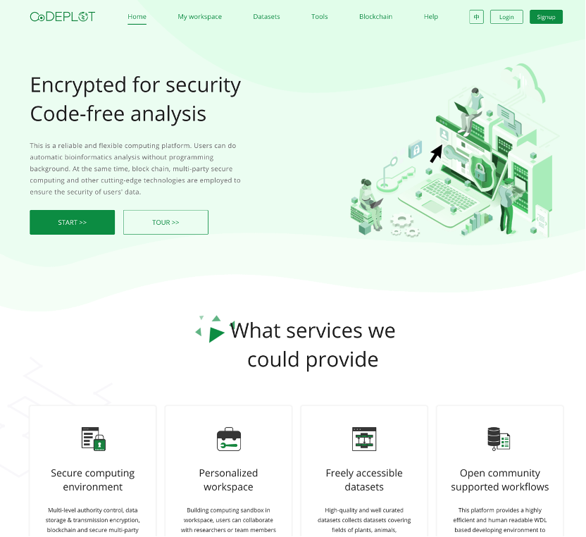CODEPLOT的优势 1.可信的计算环境
CODEPLOT 基于多级权限控制，利用数据存储加密、传输加密、区块链和安全多方计算等技术，实现数据可用不可见，数据和计算全流程实现区块链存证，为平台用户提供可信的计算环境。
- 2.多组学计算资源
可信共享系统提供了大量科研人员提供的数据集、常用的生物信息分析流程，用户也可以创建个性化数据集，或者通过共享空间方式与不同地域研究者或者团队成员进行协作分析。
- 3.弹性的计算组件
计算用户可随时随地、免费地使用灵活的组合计算组件进行自助管理，同时，分布式计算系统、多平台的可扩展的特性，也满足了用户对数据进行高效处理的需求。
- 联系我们
CODEPLOT 由国家基因库生命大数据平台团队设计开发。如果用户有任何问题和建议, 可随时联系 CNGBdb@cngb.org 。
功能介绍 CODEPLOT 由我的工作空间，数据集，工具集，区块链等四个功能模块组成。
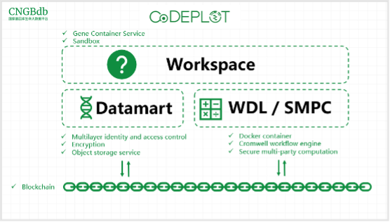- 1.我的工作空间
CODEPLOT 采用工作空间构建计算沙箱，以工作空间维度管理数据集中的公共数据集和受限数据集，计算用户可以在工作空间创建个性化数据集，或者通过共享空间方式与不同地域研究者、团队成员进行协作分析。
工作空间组件包含工作空间的概述，数据集，工作流程，运行结果。
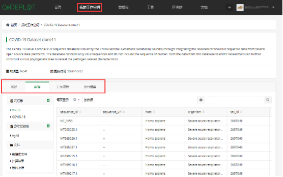- 1.1工作空间概述
工作空间概述支持Markdown语言编辑，支持在线编辑及预览； 用户可以对研究项目进行详细的描述，描述的内容包括：用户的项目试图回答哪些问题，将使用到哪种数据和分析、工作空间所有者和创建日期的信息等。文档很重要！ 好的描述和说明使用户的工作空间更容易实现共享和协作。
- 1.2数据集
如何整理和使用数据资源？在数据选项卡，数据文件分为三类：元信息，参考基因组，文件。 1）元信息，元信息采用的是内置类似于Excel表格的方式，帮助用户直观地访问和使用公共数据集或个人数据。数据是安全的存储在用户对象存储中，数据表格通过元数据链接将工作空间元数据表格连接到数据，而元数据链接则指向云上的数据文件存储的实际位置。 2）参考基因组，用户可以添加平台已整理好参考基因组文件作为分析使用。 3）文件，文件类型分为：数据集文件、计算结果、我的上传；
数据集文件：工作空间所导入的公共数据集文件，所有用户都可以使用，但不可下载；
计算结果：用户在当前工作空间进行分析后的结果文件；
我的上传：用户自行上传到当前空间的文件，只有用户本人才可以访问；
1.3工作流程 工作流程（Workflow），即生物信息分析流程，本平台的分析流程采用WDL描述语言编写，在工作流程页面中，用户可以找到用于批量分析对应数据集的生物信息分析流程。进入工作流程选项卡，选中列表中的工作流程，即可发起计算分析，例如：序列的相似性比对分析；
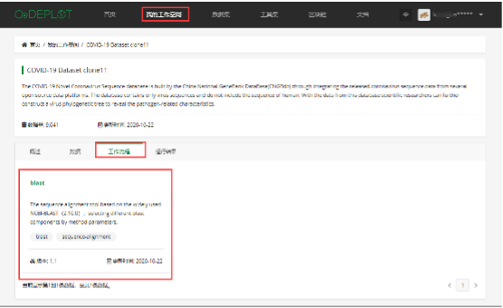1.4 运行结果 运行结果页面中，用户可以查看对应工作空间的所有提交的分析任务清单及任务状态、任务运行的历史参数和产生的结果文件，以确保任务的可重复性和出处。 点击“运行结果”选项卡，在任务清单中，可查看批量任务的状态；
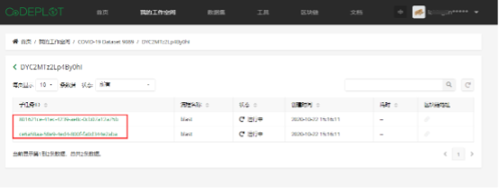数据集
CODEPLOT 对数据进行整理和整合，收集整理了多组学多物种研究领域的数据集，旨在为全球的研究者提供当前最全面的数据和信息资源，使研究人员能够便捷地进行计算分析和挖掘，促进数据的再利用。
当前版本整合的数据集有： 1）Assembly and gene annotation of the 1000 palnt transcriptomes
千种植物项目(1KP)是一个国际多学科联盟项目，对超过1000种植物进行了大规模测序研究。
- 2）COVID-19 Database
新冠数据库汇集CNGB,GgeneBank,GSAID多个来源数据序列，为研究和分析新冠病毒的进化来源和病理机制提供有效参考。
- 3）Single-cell Database
单细胞数据库共享和集成了复杂的单细胞数据集，并提供单细胞分析工具和可视化服务，方便研究人员访问和探索已发布的单细胞数据集。 用户可通过克隆公共数据集的工作空间的方式，构建与之对应资源分析的工作空间。
4) The cycad genome project 苏铁基因组计划是对苏铁和其他相关种子植物基因组数据的整合，包括原始测序数据、组装和注释。 5) Ensembl Plant Genome Database Ensemble Plants是一个整合资源，提供96种已测序植物的基因组规模信息。 可用数据包括dna序列、蛋白质序列、功能注释等。 6) Phytozome Database Phytozome数据库收集JGI测序的植物基因组，以及选定的基因组和已经测序的数据集。 7) STOMICS DataBase STOMICS DataBase 包含来自 Spatial Transcript Omics DataBase(STOMICS DB)空间转录组数据。 8)Non-Human Primate Cell Atlas 非人灵长类动物细胞图谱(Non-Human Primate Cell Atlas, NHPCA)是一个单细胞转录组数据资源，提供来自NHP器官或组织的即将出现的表观遗传学单细胞数据。 3. 工具集
CODEPLOT 基于已有的数据集资源，构建了不同研究方向的工具库，后续将会支持用户自定义部署工具，进行个性化的分析，促进用户便捷分析使用数据。同时，为满足用户隐私的计算场景，本系统提供的多方安全计算工具，实现了用户数据的可用不可见。
平台当前收录工具包含： 1.新冠病毒数据BLAST检索工具
依托CNGB,GgeneBank,GSAID多个来源数据序列构建的BLAST数据库，快速检索新冠病毒的相似性序列，为分析新冠病毒的进化来源提供有效参考。
- 2.单细胞聚类scanpy分析工具
新一代单细胞测序技术的快速发展，在准确度大大提高的前提下, 进一步降低测序成本。由此不断产生出巨量的分子生物学数据，Scanpy 是一个基于 Python 分析单细胞数据的主流软件包,内容包括预处理,降维,聚类等多个步骤。为便于用户便捷分析单细胞转录组数据，平台除了提供矩阵到聚类的一整套流程“single_cell_scanpy”流程，还将必要的每一步拆分出来便于用户分步骤调试。
- 3.HMMER基因家族分析
HMMER广泛用于在相关数据库中搜索同源蛋白质或核苷酸序列，它基于多个序列比对生成的比对矩阵文件，采用隐马尔可夫模型的算法进行同源基因的鉴定。它的主要用途包括搜索单个蛋白质序列、多个蛋白质序列比对或针对目标序列数据库的使用隐马尔可夫模型进行搜索。 在这里，HMMER的部署是为了搜索由千种植物转录组项目生成的基因编码数据集中给定基因家族的所有成员。
- 4.转录组差异分析edgeR 分析流程
edgeR包主要是用于利用来自不同技术平台的read数（包括RNA-seq，SAGE或者ChIP-seq等）来鉴别差异表达或者差异标记。其主要是利用了多组实验的精确统计模型或者适用于多因素复杂实验的广义线性模型，常用于转录组表达差异分析。 基于改工具用户提供定量表达文件及比较组相关信息就会快速得到比较组之间差异基因。后续我们会不断丰富转录组全套流程。
- 4.区块链浏览
平台使用区块链对用户数据文件与计算记录进行存证，保证所有相关计算过程和历史均可追溯到初始数据且记录不可篡改。用户可在区块链浏览页面查看平台整体数据与计算存证情况，也可通过用户个人数据文件的存证地址进行相关查询。
数据管理 1.数据表的使用
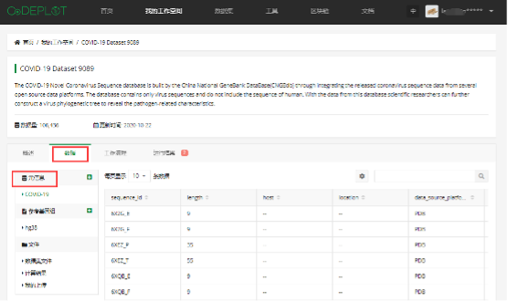CODEPLOT 采用数据表的方式管理你的数据，在工作空间数据页面中，元数据选项卡采用了内置类似于excel表格的方式，可便捷地引用或组织来自不同数据源的数据属性，包括计算分析的输出文件。用户可以使用数据表来存储数据文件列表、变量名、参与者名称，表型数据，或者用户保存在表格中的任何信息。CODEPLOT允许你可以在界面中直接填充或更改表格元素，同时也可以通过上传制表符分隔的tsv后缀文件来添加新元数据表。
- 1.1数据表的数据来源
工作空间的数据是存储在云的对象存储桶中，CODEPLOT已经将每个用户的数据都进行了桶隔离，每个用户的数据都是单独储存在用户个人的存储桶内。用户可以在表格对应的元素中，输入数据在对象存储的完整路径，从而通过数据表链接及管理用户存储桶内的文件，以便于后续通过配置工作流时将工作空间数据表作为输入数据。
数据表分为两部分： 1）表头； 2）属性或元数据行。 每行对应一个不同的实体（例如，样本，长度或文件）。
注意！数据表至少需要两列：id列。 用户可以包括其他列（例如，关联的表型信息），数据表会将信息组织在一个表格里。用户还可以配置工作流参数，将输出文件的链接写回工作空间表，这对于下游分析很有用。
1.2数据表功能 1）组织大量样本
数据表可以包含所需的全部信息，包括中间输出数据以及数据之间的相互关系。复杂的研究，通过表格来组织会比较高效：例如，如果用户有一个参与者的很多样本，又例如一个研究中可能有很多患者。
- 2）批量分析
在后续运行工作流程分析时，用户可通过选择多条数据，在参数输入配置页面，通过输入’this.’+表格列名，可以快速地构建不同数据对应不同参数的批量分析，为用户个性化分析提供便捷。
- 1.3修改表格元素
如果用户只需要更改少量条目，则可以进入“Meta data”选项卡，直接在界面中进行编辑更改。
- 1.4覆盖或新增表格
如果需要在工作空间表中覆盖已有的表格或新增表格，单击元信息右上方的“ +”，在 新增元信息表的弹窗上，按照页面要求信息上传该表。 注意，上传新表时填写的“Table name” 请设置和已有表格不同得表名，若出现同名，将提示覆盖原有表格。请谨慎操作。
- 2.上传数据
CODEPLOT 支持浏览器上传和传输工具上传两种方式，进入“工作空间-数据-文件-我的上传”，点击右上方“+上传”按钮进行文件上传。
- 2.1 浏览器上传
浏览器上传支持用户拖拽上传或点击选择本地文件上传。 注意：批量上传最多选择5个文件，每个文件最大限额100MB.
- 2.2传输工具上传
传输工具上传采用云对象存储工具。需要下载相应客户端，复制用户的在对象存储的访问授权码AK/SK进行登录上传大容量文件。
1）客户端下载： OBSBrowserPlus-win32 OBSBrowserPlus-win64 OBSBrowserPlus-Mac 2）请选择AK登录方式，并输入以上授权码进行登录，详情请见 用户指南。 3）请妥善保管用户的AK/SK，以防数据丢失。
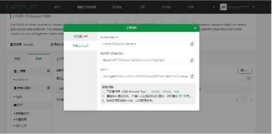运行WDL工作流任务 1.新建/克隆工作空间 CODEPLOT中所有的研究是基于工作空间的维度进行构建的，如果用户即将开启研究，需要先创建一个工作空间。 创建工作空间的方式有两种： 1.新建工作空间：
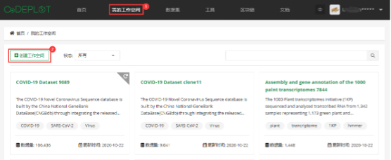点击“我的工作空间”，进入工作空间页面，页面左上角上“+创建工作空间”按钮，弹出创建工作空间窗口，输入工作空间的标题和描述，自由选择是否添加公共数据集数据，点击“提交”按钮完成创建。
- 2.克隆数据集：
在“数据集”页面，用户可以选择一个公共数据集在数据集详情页面右下点击“克隆“按钮，会创建一个对应数据集的克隆工作空间。
- 2.设置工作流程参数
发起分析工作流时，我们会配置需要运行的工作流程变量指定值或文件。这包括定义 输入 （即参考基因组文件，计算参数，并输入数据文件名和位置）和输出。
配置参数对于用户进行四个操作：选择数据->设置流程输入参数->设置流程输出参数->运行
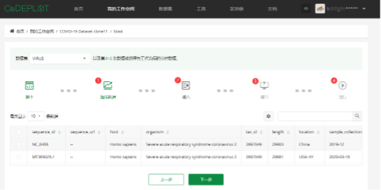- 1） 选择数据
在该页面，用户可以选择工作空间中的其中一个表格作为后续分析参数的配置选项。在表格中你可以选择一条或多条数据便于后续通过参数框内通过输入‘this‘加对应表格列名来批量运行用户选择的多条数据。
- 2） 配置输入参数
输入参数选项卡是用户在对应分析中选择工具对应的输入文件或者个性化的参数值。页面如下。 输入参数选项卡中有四列值，分别是任务名称，变量名称，参数类型，参数取值；在变量名称中“？”符号，鼠标覆盖上去会显示该参数说明。
参数配置支持两种方式配置 1）工作空间元数据表配置参数
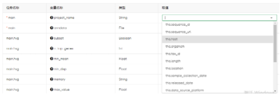用户如果想使用之前你在选择数据页面所选的多条数据的信息，用户可以通过‘this’+对有表格中的列名，如ths.sequence_id 就代表你在工作空间表格对应“sequence_id”列值元素作为参数值。注意 请确保你所选的列元素值类型和参数类型一致，以免造成流程出错。
2） 从对象存储桶中配置文件 对应参数类型为文件类的参数值，取值框左侧会有一个文件夹的按钮，如下图所示，点击文件夹按钮，会弹出如下框，你可以选择工作空间引用的公共数据集文件也可以选择个人之前上传所需的文件作为输入文件。注意如果文件选择该方式且在参数列表中未选择this.方式作为列名，则会相同文件运行多次。
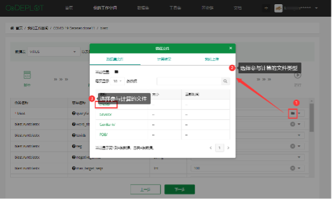- 3） 配置输出参数
在输出参数配置页面的参数值，是对应WDL工作流中的结果文件，如果用户想将输出结果文件回填至之前的选择数据的对应列中，则可参考示例图片中通过填写this.outfile将结果文件对应路径回填到表格outfile列，注意如果该列存在则会覆盖对应列值，如果不存在则会新增对应列值。如果你不想回填表格可默认下一步

- 4） 运行
在配置完输出参数页面点击“运行”按钮，会进入运行页面提示用户任务已提交，如下图所示。用户可以点击查看运行结果会进入运行结果页面。可查看任务运行状态以及任务提示。
- 3.任务监视以及流程debug
运行结果记录了该工作空间所有运行批次记录。记录的信息包含：任务ID,流程名称，批次任务数量，批次任务状态，创建时间等信息。
1） 任务任务状态，工作流程四个状态：等待中，运行中，成功，错误。 • 等待中：任务已经超过提交，正在排队运行； • 运行中：任务正在运行中； • 成功：任务已经成功运行完成； • 错误：任务运行出错； 2） 子任务运行信息
子任务详情信息页面中，提示子任务的创建时间，耗时状态，以及子任务在提交过程中输入参数内容和输出参数内容。 如果用户的任务运行成功，用户可以在输出页面中直接点击下载相关结果文件。并可点击结果目录对任务进行深度debug。
- 3） 任务debug
当任务运行失败时。平台会列出任务日志和工具程序日志。 任务日志：当任务投递失败或运行失败，子任务状态会返回简单错误日志，你可以鼠标移到到状态列中“错误”字体会显示任务错误的日志信息。如下图：
运行Jupyter Jupyter Notebook是基于网页的交互计算的应用程序。CODEPLOT在工作空间中支持在特定的虚拟环境中启动Jupyterlab 服务。 1.进入工作空间Notebook页面 创建一个新的工作空间/打开一个工作空间。在工作空间页面会有一个”Notebook”选项卡。
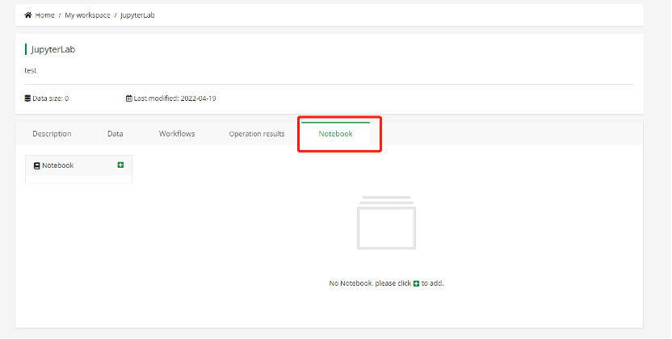2.上传 Notebook文件 点击 “+”上传/添加 Notebook文件.
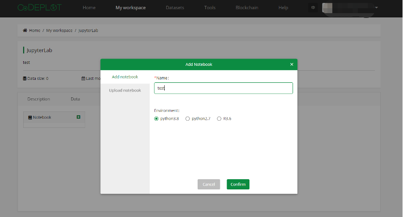3.选择资源和云环境 点击”run”,选择特定虚拟云环境和资源开启Notebook.点击 “confirm”,等待片刻进入Jupyterlab页面。
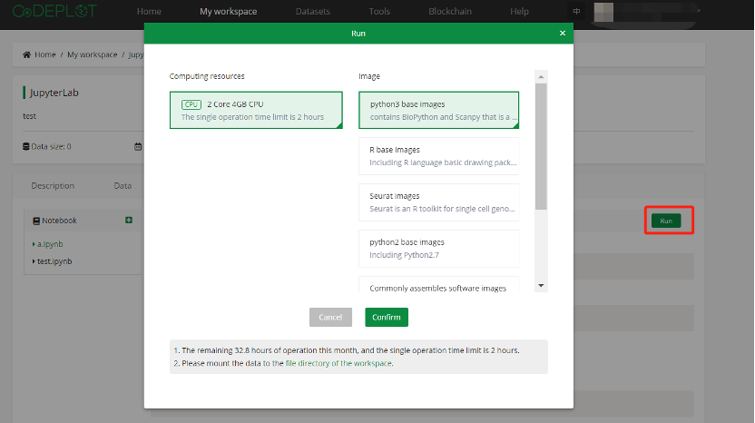4.运行成功 进入Jupyterlab页面，就可以进行相关交互分析。如果用户不熟悉Jupyterlab操作，请参阅Jupyterlba官方使用说明文档。 5.使用限制 • 为了避免资源浪费，请及时关闭运行环境。每个用户当月只有50h使用时间， • 每次限制时长为2h • 免费提供资源只支持2核 4GB资源使用资源和仅使用我们提供通用和特色的镜像环境，如有需要特定需求请联系我们。 区块链存证
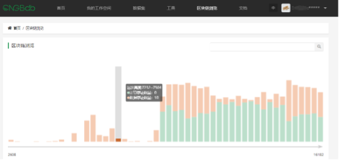用户上传到工作空间并且已用于计算的数据文件，及在 CODEPLOT计算成功后的结果文件，平台都会进行数据上链，用户可通过存证地址查询区块链高度。
- 1.子任务存证查询
进入”我的工作空间”-“XX空间”-运行结果-任务ID，在子任务列表中点击需查看的存证地址图标，即可在“区块链浏览”页中查看当前地址的区块高度，地址所在区块将高亮显示，鼠标聚焦高度柱子，可查看区块高度、计算存证数量、数据存证数量；
注意：当存在地址图标为灰色不可点击时，说明该文件尚未被用于计算，未上链，以下所有查询方式通用；
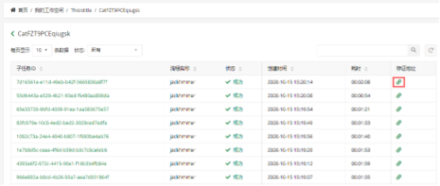- 2.计算结果及上传文件的存证查询
进入“我的工作空间”-“XX空间”-数据-文件，在“计算结果”或“我的上传”列表中，点击需查看的存证地址图标，查看方法同上；
- 3.存证地址列表查询
直接登录“区块链浏览”页，点击页面下方的存证地址列表，点击需要查询的地址，查看方法同上；
安全环境 1.容器计算环境 平台计算基于容器技术构建，因此具备容器级别的启动速度和虚拟机级别的安全隔离能力。具有以下几个特点： • 原生支持 Kata Container • 基于 Kata 的内核虚拟化技术，提供全面的安全隔离与防护 • 硬件虚拟化加速技术，更高性能的安全容器 2.安全多方计算
在现有健康医疗数据管理模式下，由于信息系统的差异与利益格局的壁垒，不同机构之间难以实现数据的安全共享。这种模式不仅导致了数据的分散，也大大降低了数据的利用效率。 平台采用前沿的安全多方计算技术。安全多方计算分离了数据的使用权与所有权，实现了数据的可用而不可得，并在数据生产方、数据需求方以及数据监管方三方相互制约的情况下运营，并且具有以下三点:
输入隐私性：严格要求各参与方的输入保证独立性，保证本地数据与隐私不被泄漏；
去中心化：算法进行去中心化处理，保证各参与方权力平等，不存在拥有特权的输入方或者第三方；
计算正确性：在保证数据隐私的情况下，将计算结果反馈到整个计算任务系统，从而各方得到正确的数据反馈；
- 3.数据安全
平台数据存储于稳定安全的对象存储中。对象存储支持HTTPS/SSL安全协议，用户所有的数据都会加密上传并存储。同时OBS所有数据必须通过访问密钥（AK/SK）对访问用户的身份进行鉴权，结合IAM权限、桶策略、ACL、防盗链等多种方式和技术确保数据传输与访问的安全。并且通过五级可靠性架构，保障数据持久性高达99.999999999%，业务连续性高达99.99%，远高于传统架构。